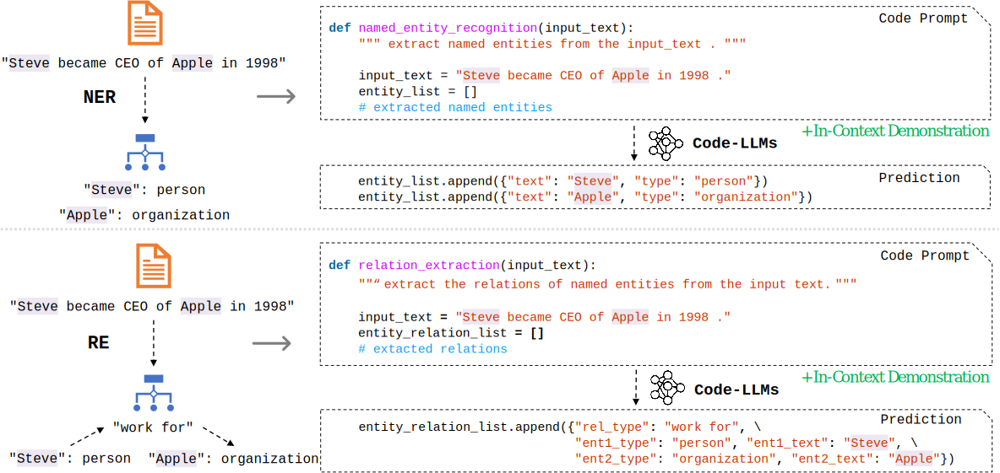

CodeIE: Large Code Generation Models are Better Few-Shot Information Extractors
Peng Li*, Tianxiang Sun*, Qiong Tang, Hang Yan, Yuanbin Wu, Xuanjing Huang, Xipeng Qiu
Large language models (LLMs) pre-trained on massive corpora have demonstrated impressive few-shot learning ability on many NLP tasks. A common practice is to recast the task into a text-to-text format such that generative LLMs of natural language (NL-LLMs) like GPT-3 can be prompted to solve it. However, it is nontrivial to perform information extraction (IE) tasks with NL-LLMs since the output of the IE task is usually structured and therefore is hard to be converted into plain text. In this paper, we propose to recast the structured output in the form of code instead of natural language and utilize generative LLMs of code (Code-LLMs) such as Codex to perform IE tasks, in particular, named entity recognition and relation extraction. In contrast to NL-LLMs, we show that Code-LLMs can be well-aligned with these IE tasks by designing code-style prompts and formulating these IE tasks as code generation tasks. Experiment results on seven benchmarks show that our method consistently outperforms fine-tuning moderate-size pre-trained models specially designed for IE tasks (e.g., UIE) and prompting NL-LLMs under few-shot settings. We further conduct a series of in-depth analyses to demonstrate the merits of leveraging Code-LLMs for IE tasks.
@inproceedings{DBLP:conf/acl/LiSTYWHQ23,
author = {Peng Li and
Tianxiang Sun and
Qiong Tang and
Hang Yan and
Yuanbin Wu and
Xuanjing Huang and
Xipeng Qiu},
editor = {Anna Rogers and
Jordan L. Boyd{-}Graber and
Naoaki Okazaki},
title = {CodeIE: Large Code Generation Models are Better Few-Shot Information
Extractors},
booktitle = {Proceedings of the 61st Annual Meeting of the Association for Computational
Linguistics (Volume 1: Long Papers), {ACL} 2023, Toronto, Canada,
July 9-14, 2023},
pages = {15339--15353},
publisher = {Association for Computational Linguistics},
year = {2023},
url = {https://doi.org/10.18653/v1/2023.acl-long.855},
doi = {10.18653/V1/2023.ACL-LONG.855},
timestamp = {Fri, 16 Feb 2024 08:27:36 +0100},
biburl = {https://dblp.org/rec/conf/acl/LiSTYWHQ23.bib},
bibsource = {dblp computer science bibliography, https://dblp.org}
}